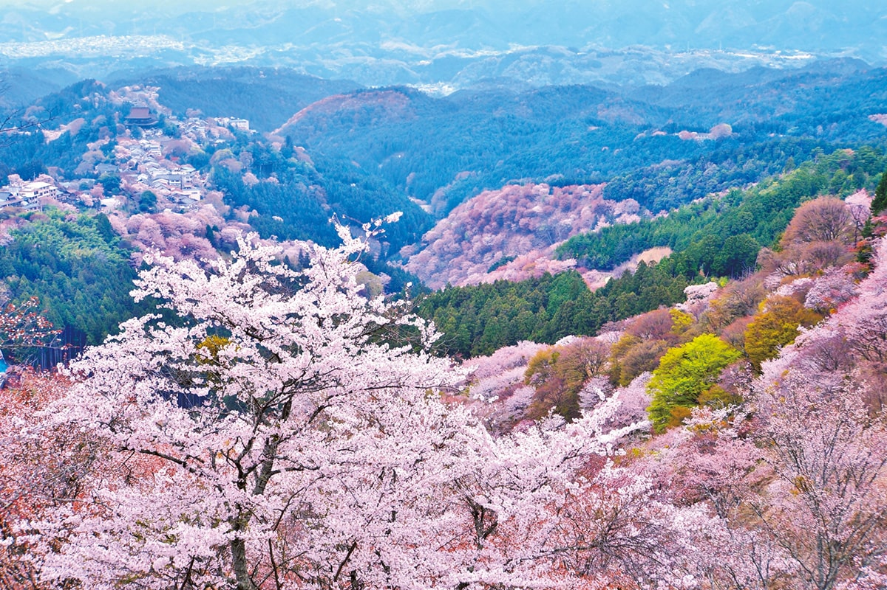
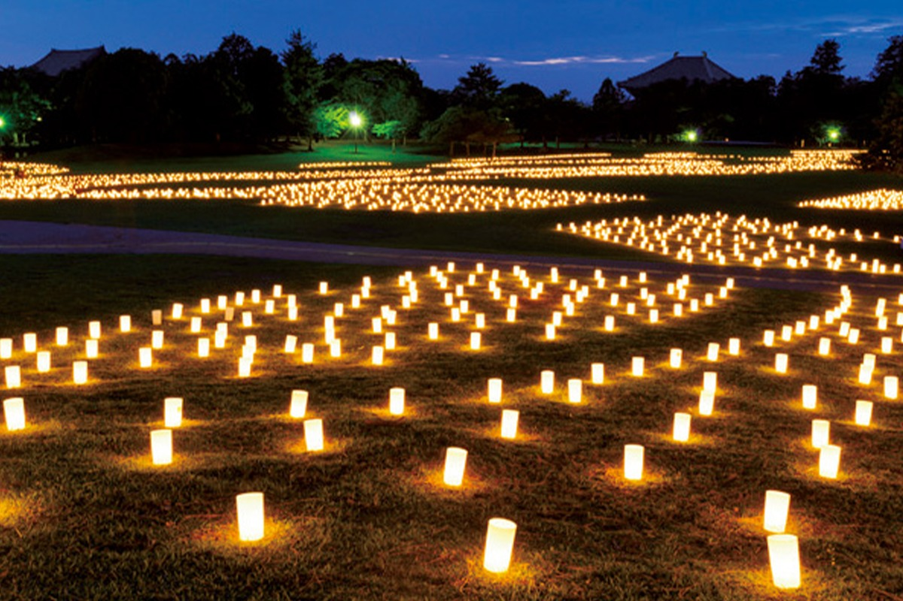
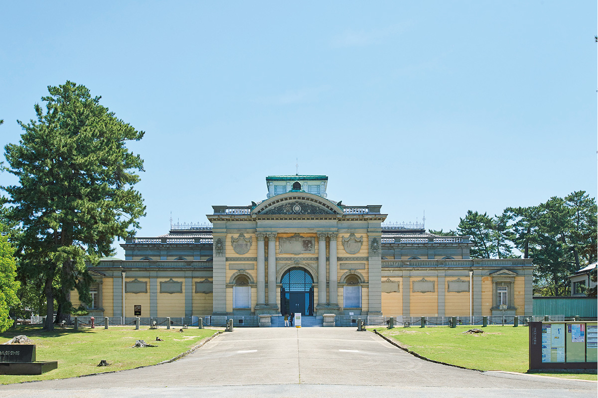
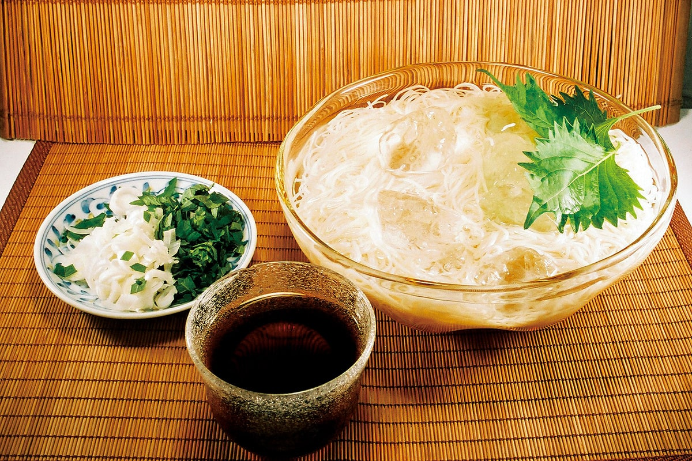
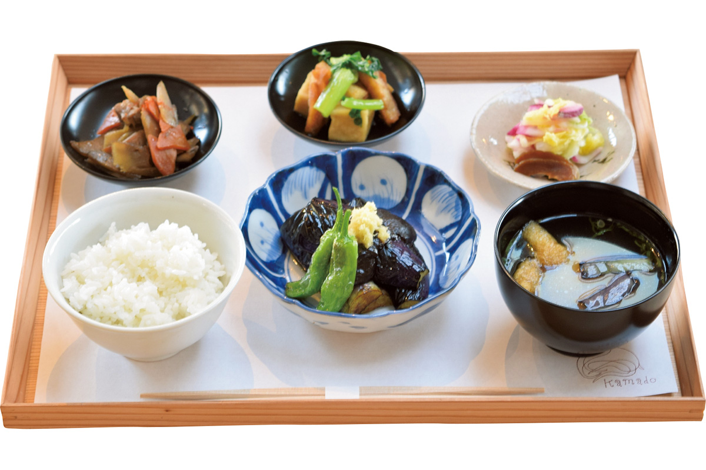
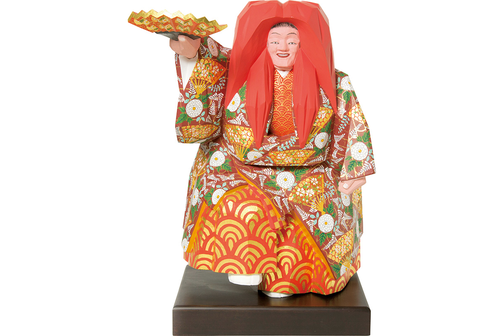
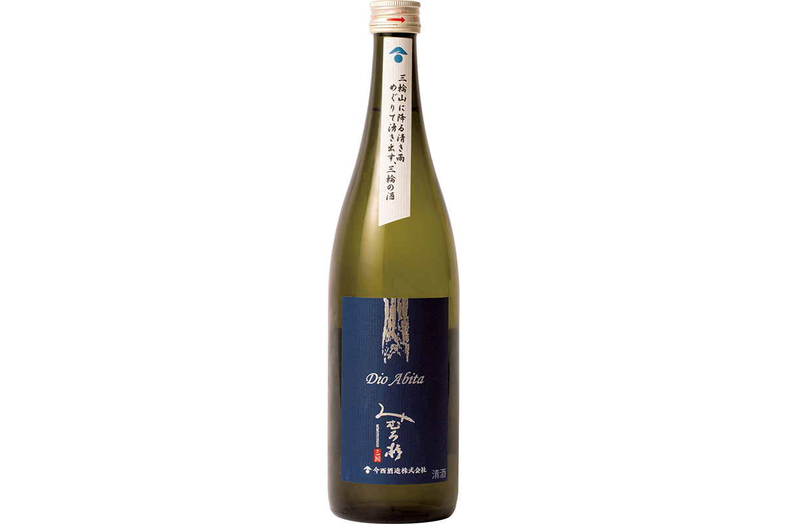
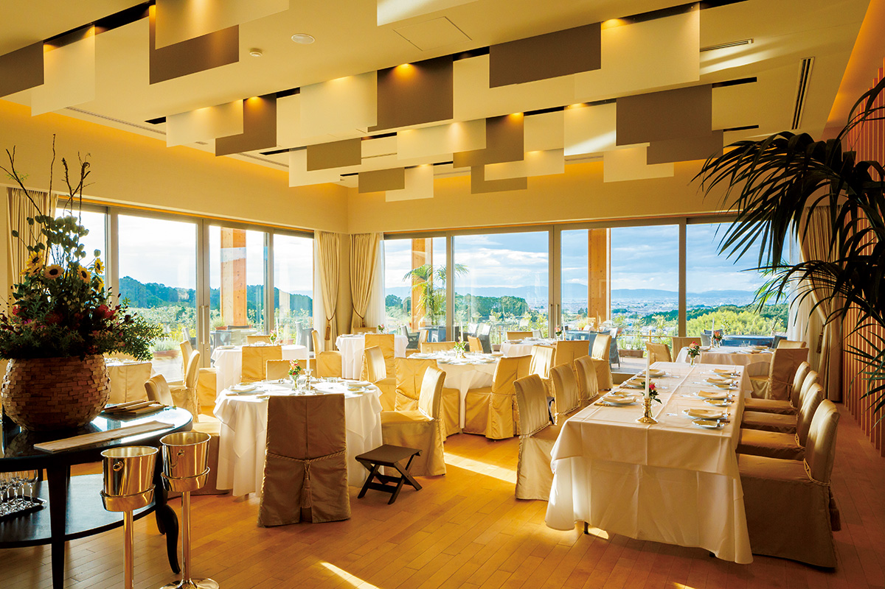

Префектура Нара
Нара: тысяча двести лет истории, местная лапша и олени у храма

Розовые кроны сакуры спускаются по склонам горы, между деревьями видны белые крыши домов.
Древняя столица, где государство оставило после себя больше всего построек в стране, а олени в парке кланяются за печеньем. Разбираем, что смотреть в Наре: от горы Ёсино до вечерних огней в парке.
Карта: 134 места из 37 статей · все статьи о префектуре Нара
Карта
Нара на карте
134 места из наших статей о префектуре Нара: Асука и принц Сётоку, гора Ёсино, парк Нара и квартал Нарамати, гора Мива и сакэ, Госэ, Тэнри и дорога Яманобэ-но мити, отели и рёканы, онсэны Тоцукава. Нажмите на точку, чтобы открыть статью.
Пунктирный круг означает, что точка примерная: место находится в этом районе или на этом острове.
О префектуре
Город, который был столицей раньше Киото
Нара известна как древняя столица. Здесь поочерёдно стояли центры власти эпох Кофун, Асука и Нара, и здесь же была устроена столица Хэйдзё-кё. Через связи с китайской династией Тан в эти места пришла культура Тэмпё, и вместе с ней расцвели буддизм, скульптура, живопись и архитектура.
Здесь создали «Кодзики», «Нихон сёки» и «Манъёсю». Храмы Тодай-дзи и Кофуку-дзи, поставленные тогда, сегодня считаются мировыми достопримечательностями, а всего в префектуре три объекта всемирного наследия.
Эмблема префектуры сложена из знака «на» слова «Нара»: внешний круг означает природу Ямато, внутренний круг означает дух согласия, а горизонтальная ось поперёк круга передаёт единство и непрерывное движение вперёд.
Что посмотреть
Гора сакуры и ущелье трёх префектур
Гора Ёсино
Место с давних пор считается лучшим в стране по цветению сакуры. Это же опорная точка паломничества в горы Оминэ и священное место школы сюгэндо, где и сегодня идут практики. Деревья растут ярусами, потому цветение идёт волной снизу вверх.
- Справки
- ассоциация туризма горы Ёсино
- Телефон
- +81 746-32-1007
Что ещё посмотреть
- Парк Нара, олени и храмы на одном газоне
- Ущелье Дорокё, скалы и синяя вода на границе трёх префектур
- Плато Одайгахара, плоскогорье с видом на сотню гор
Праздники
Двадцать тысяч свечей на десять вечеров
Праздник огней Нара Токаэ
Летний праздник, когда около двадцати тысяч свечей зажигают по всей Наре. Он идёт десять дней подряд, каждый вечер, и площадки у Кофуку-дзи и пруда Сарусава становятся похожи на отдельный город из огня.

- Период
- каждый год в августе
- Место
- парк Нара и окрестности, город Нара
Другие праздники
- Выжигание горы Вакакуса, зимний огонь на склоне у парка
- Обряд Сюни-э в павильоне Нигацу-до, ночное чтение у Тодай-дзи
- Выставка Сёсоин, сокровища императорского склада
Музеи и архитектура
Французский фасад у оленьего парка
Национальный музей Нары
Музей стоит на краю оленьего парка и состоит из двух зданий: зал буддийской скульптуры построен в эпоху Мэйдзи в стиле французского неоренессанса, а новый корпус повторяет образ сокровищницы Сёсоин.

- Адрес
- 50 Noborioji-cho, Nara, Nara
- Телефон
- +81 50-5542-8600
- Сайт
- narahaku.go.jp
Что ещё посмотреть
- Зал Большого Будды в Тодай-дзи, самый крупный бронзовый Будда
- Храм Хорю-дзи, старейший деревянный храмовый ансамбль
- Святилище Касуга тайся, фонари и оленьи фигуры у входа
Местная кухня
Тонкая лапша и чай вместо бульона
Лапша Мива сомэн
Название идёт от святилища Омива, которое считают одним из старейших в стране. Лапша получается гладкой на вкус и плотной по структуре, после варки она долго не разваривается и не тянется.

Что ещё попробовать
- Суши в листе хурмы, рыба и рис, завёрнутые в маринованный лист
- Чайная каша с нарой-дзукэ, рис на чае с солёными овощами
- Юбэси, сладость из цитруса и маринованного имбиря
Где поесть
Домашний рис в старом доме
Столовая Камадо
Проект «Куруми-но ки» переделал городской дом эпохи Тайсё в многофункциональное пространство, а внутри открыл столовую. Рис местных сортов готовят в настоящем очаге и подают прямо из него.

- Адрес
- 11 Inoue-cho, Nara, Nara
- Телефон
- +81 742-94-5520
- Часы
- 11:00-16:00
- Выходные
- среда и каждая вторая пятница
Ремёсла
Кукла, вырезанная одним резцом
Резьба иттобори мастерской Сэйбидо
Мастера берут кипарисовик, камфорное дерево или кумару, смело снимают материал стамеской и затем расписывают фигуру золотом и красками. Такие куклы называют также нара-нинге, и они служат оберегом для дома.

- Телефон
- +81 742-43-4183
- Сайт
- hina-ningyou.com
Что привезти
Сакэ с родника Мива
Сакэ Мимуро-суги от Иманиси сюдзо
Для напитка берут воду из подземного потока горы Мива и рис сорта ямада-нисики. Это нефильтрованное сырое сакэ с одним прогревом, бутылка объёмом 720 миллилитров стоит 1650 иен.

- Телефон
- +81 744-42-6022
Где остановиться
Девять комнат с видом на поля
Оберж де Плезанс Сакураи
Первый в Наре оберж: кухня французская, а комната сложена из местного ценного дерева. С террасы открывается вид на поля без единого строения до горизонта.

- Адрес
- 2217 Takaie, Sakurai, Nara
- Телефон
- +81 744-49-0880
- Комнат
- 9
- Цена
- от 34 000 иен за ночь с двумя приёмами пищи на человека, налоги и сборы включены
Местный диалект
Как здесь говорят «очень вкусно»
- мэття ойсии наочень вкусно
- ё: ойдэдобро пожаловать
- инупойти домой
- оторосийхлопотно
- дэрайбольшой
Рекорды
В чём Нара первая
- №1 число построек, отнесённых к национальным сокровищам
- №1 производство туши для письма
- №1 производство носков
Вопросы и ответы
Что ещё спрашивают о Наре
Как называется ущелье на границе Нары, Миэ и Вакаямы?
Ущелье Дорокё. Оно входит в национальный парк Ёсино-Кумано и имеет статус особо живописного места страны. Отвесные скалы, огромные валуны, вода цвета кобальта и очень чистый воздух.
Как называется рис, сваренный на японском чае?
Тягаю. Чай здесь выращивают давно, потому дома варят рис на зелёном чае, чаще всего на ходзитя, и едят его вместе с нарой-дзукэ, солёными овощами из сакевых дрожжей.
Справочник
Нара в цифрах
Общие сведения
| Административный центр | Нара |
| Муниципалитеты | 12 городов, 15 посёлков, 12 сёл |
| Площадь | 3691 кв. км |
| Население | 1,34 млн человек |
| Плотность населения | 362,8 человека на кв. км |
| Туристов в год | 18,63 млн |
| Дерево префектуры | криптомерия |
| Цветок префектуры | нараская махровая сакура |
| Птица префектуры | японская зарянка |
Климат
| Средняя температура | +16,2 |
| Максимум | +34,4 |
| Минимум | минус 0,2 |
| Осадки | 1647 мм |
| Ясных дней | 28 |
| Дождливых дней | 110 |
| Снежных дней | 17 |
Для путешественника
| Онсэнов | 31 |
| Гостиниц и рёканов | 406 |
| Музеев искусств | 7 |
| Музеев | 15 |
| Митиноэки, придорожных станций | 15 |
| Национальное сокровище | свиток «Нихон сёки», часть десятая, в Национальном музее Нары |
| Важных культурных ценностей | 1327, из них 203 национальных сокровища |
| Исторических мест | 118 |
| Живописных мест | 10 |
| Природных памятников | 18 |
| Всемирное наследие | буддийские постройки Хорю-дзи, памятники древней Нары, святые места гор Кимэ |
Природные памятники
- Олени Нары, стадо у парка и храмов
- Лес Касугаяма, нетронутый горный лес у святилища
- Роща сисинран, редкая орхидея на склонах
- Криптомерия с восемью ветвями, старое дерево у святилища
Наши статьи
Все статьи о префектуре Нара
Город Нара
- Два ужина у парка Нара: баскская смелость akordu и сезонный кайсэки Tsukumo
- Nara Hotel: деревянный дворец эпохи Мэйдзи у парка Нара с пианино Эйнштейна и номером Одри Хепбёрн
- Нарамати: квартал купцов, призраков и старинного ткацкого дома
- Храм Дайандзи: первый государственный храм Японии, где учились Кукай и Сайтё
- Fufu Nara: курорт Кэнго Кумы в парке Нара, с онсэном в каждом номере и ужином на травах
- MIROKU NARA by THE SHARE HOTELS: отель у парка Нара, где оленей видно с террасы
- LAMP BAR: бар в Наре, где лучший бармен мира смешивает коктейли из нарского сакэ и чая
- Нара во второй раз: два дня по любимым местам хозяйки кафе «Куруми-но ки»
- Ремёсла Нары за два дня: тушь, папье-маше, горная деревня и галерея
- tsuzuru: печенье в упаковке мастера мингэй Самиро Юноки
- Нарадзукэ и кудзу из Ёсино: два вкуса Нары, которым нужно время
- Horiuchi Fruit Farm: колотый лёд с целым персиком из садов Ёсино
- Кофейня «Сюкуу» в Нара: синий дождь на стенах, эспрессо за полторы минуты и чизкейк
- Нара, где всё началось: родина сакэ, чая, сладкой булочки, колотого льда, веера и туши
Асука, Касихара и юг равнины
- Деревня Асука: родина принца Сётоку и место, где начиналась Япония
- Император Дзимму: первый правитель Японии, который объединил богов неба и земли
- Родина сумо: где в Наре прошёл первый поединок и как он живёт в праздниках
- Замок Корияма: последняя резиденция Хидэнаги Тоётоми, младшего брата Хидэёси
- Нара, где всё началось: шесть мест древней истории Японии
Мива, Тэнри и Сакураи
- Мива: гора бога сакэ, последняя сакэварня у её подножия и два дня по окрестностям
- Исоноками-дзингу: древнейшее «дзингу» Японии и меч, найденный под запретной землёй
- Ночь в соевой пивоварне: старейший в Наре дом «Маруто» снова варит соус и принимает гостей
- Тэнри и дорога Яманобэ-но мити: отель без ресторана, древнее святилище, сакэ и лапша сомэн
- cofunia в Тэнри: ночлег в старом доме у подножия кургана
- «Киёсуми-но сато Ава»: традиционные овощи Ямато и два дня по местам, где начиналась Нара